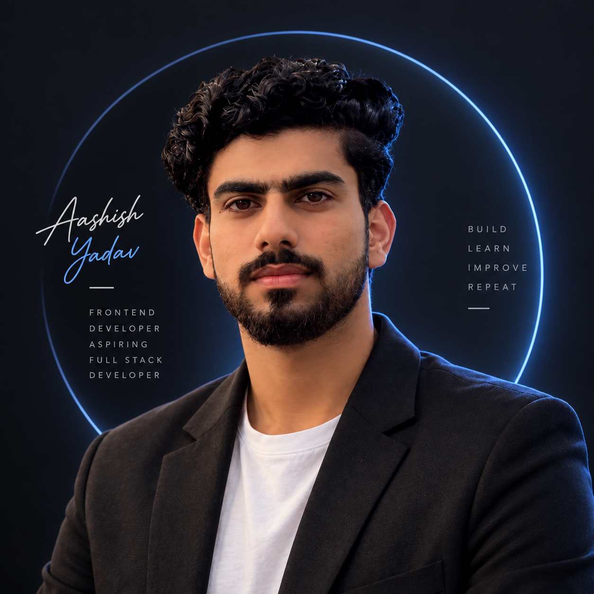

Frontend Developer
Modern interfaces and responsive web experiences.
I'm a passionate Frontend Developer focused on building modern, responsive and interactive web experiences. I enjoy turning ideas into clean user interfaces while continuously improving my JavaScript and React.js skills.

A little context
Curious by nature.
Builder by choice.
I'm Aashish Yadav, a Frontend Developer and BCA graduate from Galgotias University. I enjoy building modern, responsive and interactive websites and learning through practical projects.
I am continuously strengthening my JavaScript and React.js skills while improving my frontend development abilities one project at a time.
Modern interfaces and responsive web experiences.
Bachelor of Computer Applications · Galgotias University.
Available for frontend roles and meaningful projects.
What I work with
Always learning.
Always building.
Selected work
Real builds.
Verified links.
A modern responsive website created for a real-world water supply business idea, featuring a clean interface and business-focused user experience.
A professional responsive healthcare website designed with a clean, modern and user-friendly interface.
A responsive digital business card website created while practicing frontend development fundamentals.
An interactive JavaScript application built to practice DOM manipulation, event handling and JavaScript fundamentals.
An interactive basketball scorecard built to practice JavaScript logic, DOM manipulation and dynamic UI updates.
Learning in motion
No shortcuts.
Just momentum.
Bachelor of Computer Applications at Galgotias University.
Started learning frontend development and building websites using HTML and CSS.
Started building interactive applications while strengthening JavaScript fundamentals.
Built practical projects including JS Aqua, Mukhiya Hospital, Business Card, Passenger Counter and Basketball Scorecard.
Focusing on JavaScript, React.js, responsive design and modern frontend development.
Continuously improving frontend skills through practical projects and hands-on development.
Open notebook
I believe the best way to learn development is by building, experimenting and improving.
View GitHub ↗Open to opportunities
I'm actively looking for opportunities to grow as a Frontend Developer and contribute to real-world projects.
Start a conversation
Have an opportunity, project or idea? I'd love to connect.